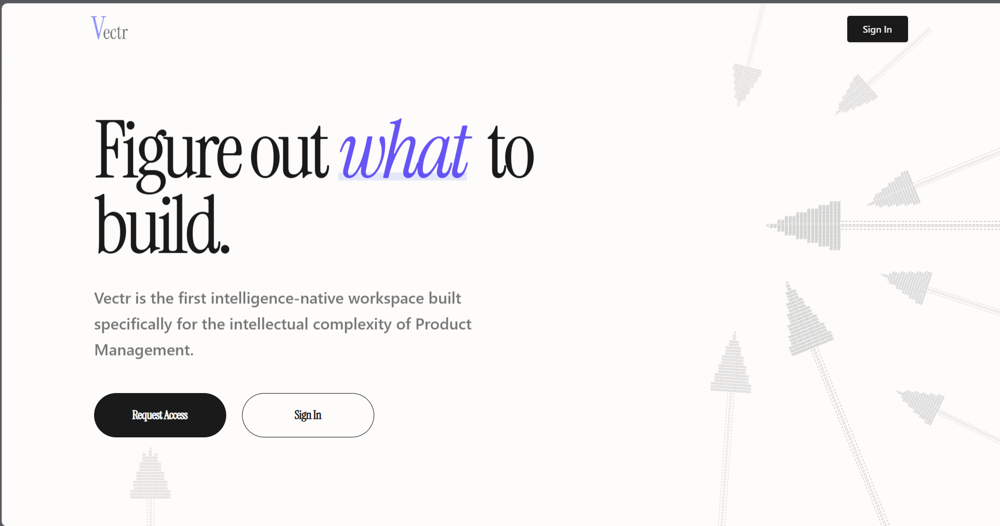
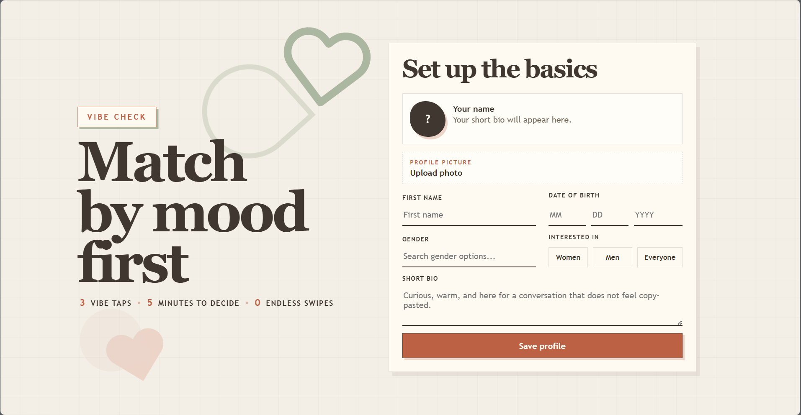
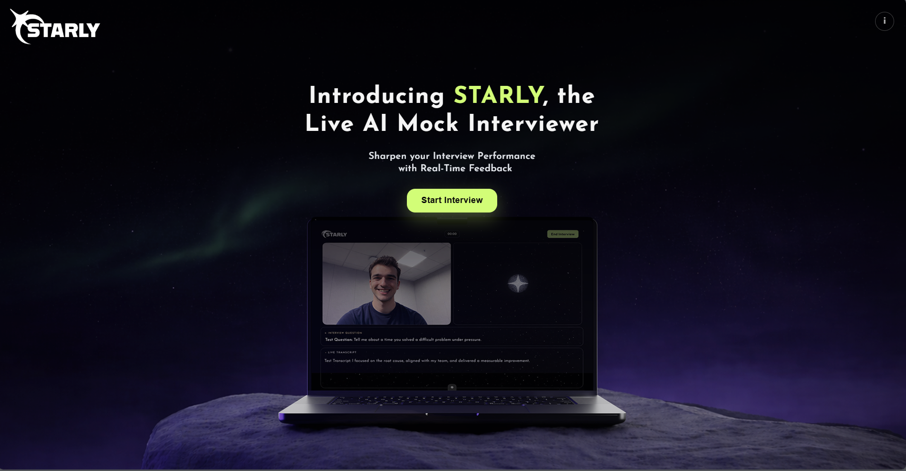
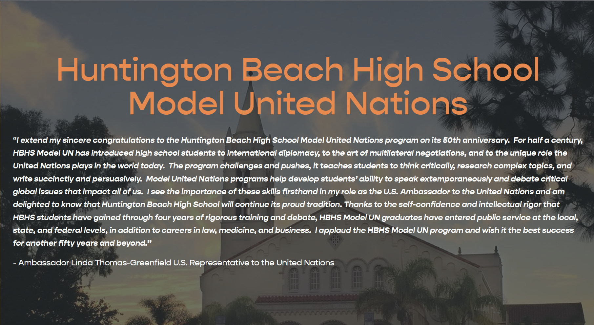

Vectr
An AI-native product management workspace supporting PRDs, strategy docs, and tradeoff analyses — powered by a RAG retrieval layer and used by 20+ beta users.
View on vectr.soSelected Work

Vectr
An AI-native product management workspace supporting PRDs, strategy docs, and tradeoff analyses — powered by a RAG retrieval layer and used by 20+ beta users.
View on vectr.so
Vibe Check
A realtime chat app that matches people by conversation intent, energy, and style — keeping profiles hidden until both users decide to connect. Built for Ditto.AI.
View on GitHub
STARLY
An AI-powered mock interview platform with live voice interviews, STAR-based evaluation, and an 8,000-particle Three.js audio-reactive visualization.
View on GitHub
Model United Nations — Huntington Beach High School
Competed at top national and international MUN conferences for 4 years, including NHSMUN, BMUN, and SSUNS, earning top awards across multiple delegations. Developed strong public speaking, persuasive writing, and real-time negotiation skills by representing complex geopolitical positions in front of large committees. Collaborated with delegations from across the world to draft and pass resolutions under pressure — building the kind of cross-functional communication and stakeholder alignment that translates directly to technical client-facing roles.
Learn More